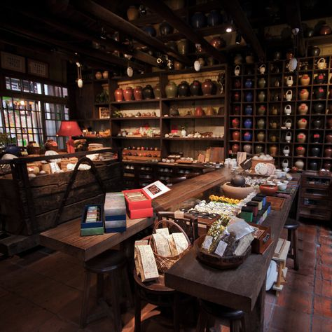
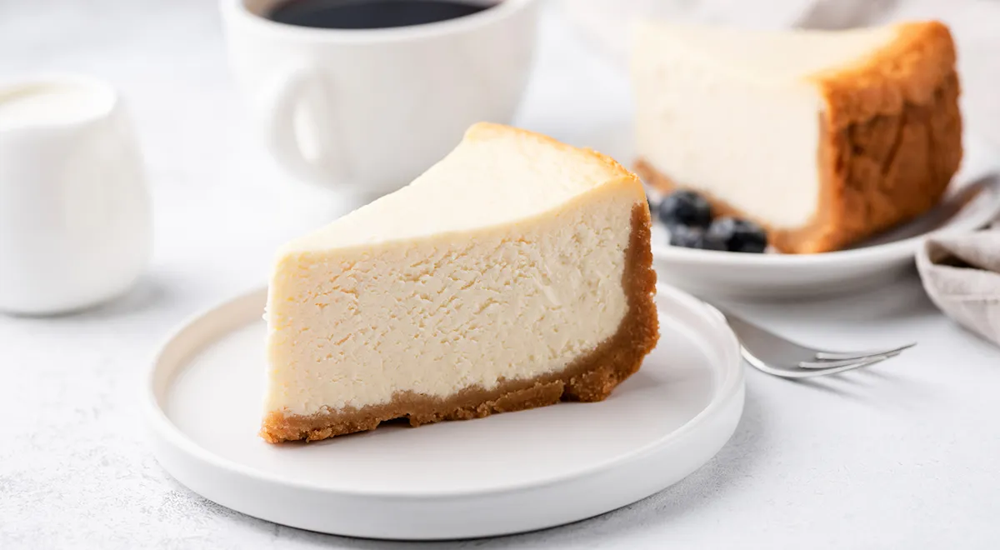
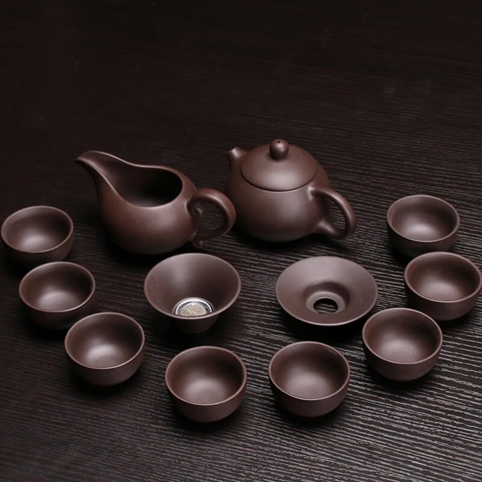
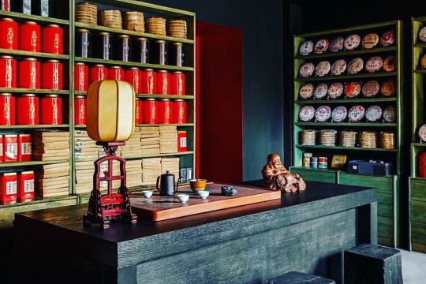
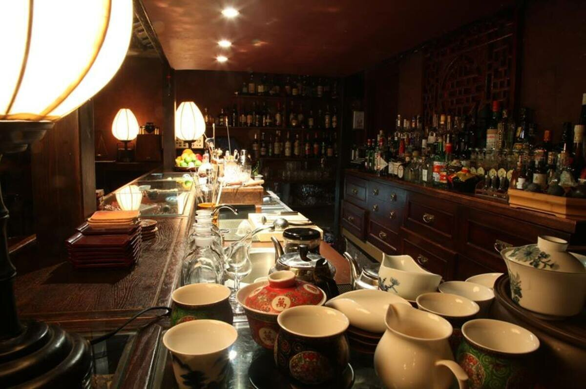

Место, где чай пахнет домом 🍵
Мы — небольшая семейная чайная, открытая в 2025 году. Мы бережно подбираем чайные листья, сами печём домашние десерты и создаём атмосферу тепла. Здесь не просто пьют чай — здесь отдыхают душой, согреваются в непогоду и ведут приятные разговоры.
30+
Сортов чая
15+
Видов десертов
2025
Год основания
🌱 Свежий подбор чая
🍰 Домашние десерты
🍵 Натуральный чай
🛋 Уютная атмосфера
Всё началось с маленькой домашней кухни и большой любви к чаю. Мы хотели создать место, куда искренне хочется возвращаться в любой день за теплом и спокойствием. И теперь «Уют» — это не просто чайная, а важная и дружная часть нашего города.
Наша команда
Нажмите на карточку мастера, чтобы познакомиться с ним поближе!
Атмосфера нашей чайной







